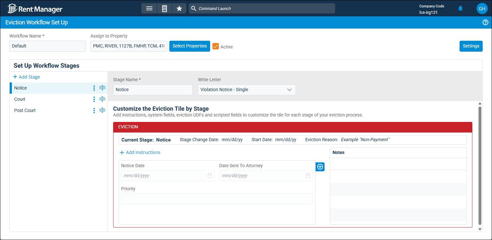
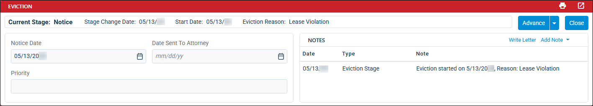

Source: https://rmxhelp.rentmanager.com/Topics/Express/KB/LP-Evictions.htm
Evictions
The eviction process is long and time consuming and requires a variety of different steps and jurisdiction-based requirements. With Rent Manager, you can keep track of evictions in progress by recording information like the date of notice, outcome, and associated judgment amounts. Each part of the eviction process in Rent Manager is designed to help you create eviction processes that best fit your business goals.
Set Up Evictions
Each step in the eviction workflow builds off the previous step to help you stay organized and up to date as the process moves to a resolution. Before you can begin using evictions in Rent Manager, you must complete the initial set up. To complete the eviction set up, reasons, outcomes, and workflows must be established.
Eviction workflows in allow you to track and manage the multistep eviction process from start to finish. Each workflow can contain multiple stages, customized payment settings, and automated letter actions in order to tailor each workflow to fit the various eviction legal processes you may have.

For more Information, refer to Set Up Evictions.
Manage Evictions
Once you set up the requirements needed for your eviction processes, you can begin a tenant through the stages of the workflow, and manage all the steps in the eviction processes from the tenant's details page within the Eviction tile.

The following actions are available to help manage ongoing evictions.
| Action | Description |
|---|---|
|
Start an Eviction Process |
This flags the tenant as part of an ongoing eviction order. The Evictiontile becomes available on the tenant's details page and on the Tenants listing page, a red badge displays the name of the eviction workflow stage next to the tenant's name. For more information, refer to Start an Eviction Process. |
|
Advance an Eviction |
The advance action in the eviction workflow is intended to help you easily move through each stage the process. The amount of times you can advance an eviction is based on how many stages were added to the eviction workflow associated with a property. For more information, refer to Advance an Eviction. |
|
Close an Eviction |
Once the eviction process is completed, the eviction can then be closed in Rent Manager. Closing an eviction allows you to mark the tenant as not evicted or evicted based on the eviction outcome selected. For more information, refer to Close an Eviction. |
|
Reopen an Eviction |
In the event that an eviction was closed before it reached completion in real life, Rent Manager allows you to easily reopen the eviction. For more information, refer to Reopen an Eviction. |
Track Evictions
Once the eviction is in process or was closed, Rent Manager has multiple ways for you to track and monitor the various steps of the process. The table below provides a list of tools in Rent Manager you can use to track evictions.
| Tool | Description |
|---|---|
|
Eviction Stage Aging (Automated Notification) |
This automated notification can be used to send an email or text message to property managers, other users, or external recipients to notify them that a tenant has been in a specific eviction stage for a specific number of days. This can be used to remind property managers of tenant evictions that need their attention. For more information, refer to Eviction Stage Aging (Automated Notification). |
|
Open Evictions (Dashboard Tile) |
Use this dashboard tile to rack tenants who are in the eviction process and displays their associated property, current eviction stage, and balance due. For more information, refer to Open Evictions (Dashboard Tile). |
|
Open Evictions (Report) |
Generate a list of tenants in the eviction process during the selected date range. Use this report to gain insight on how many tenants are in the eviction process and which stage they are in. Additionally, once the report is generated, click on the tenant's name to open the Tenant Eviction Summary and view specific details about the eviction. For more information, refer to Open Evictions (Report). |
|
Closed Evictions (Report) |
Generate a list of closed evictions during a selected date range. The report results display totals for tenants that were evicted and were not evicted when the eviction was closed. This report can be helpful for keeping track of the specific outcomes that result in an eviction being closed. Additionally, once the report is generated, click on the tenant's name to open the Tenant Eviction Summary and view specific details about the eviction. For more information, refer to Closed Evictions (Report). |